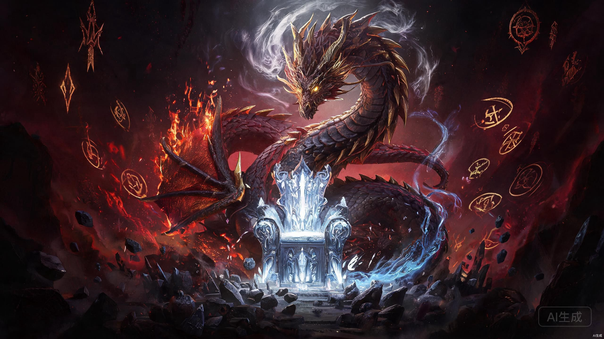
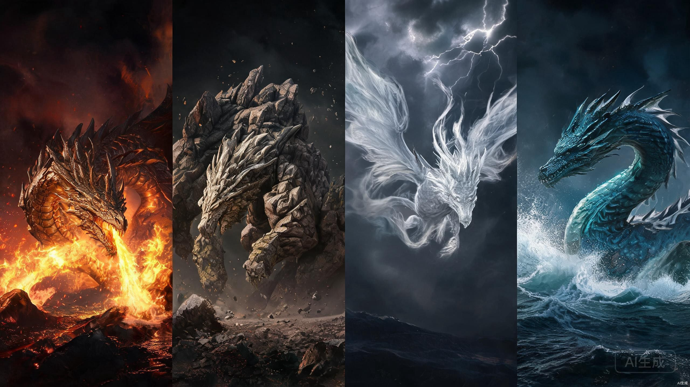

核心人物关系图
点击人物头像可查看详细信息，拖拽可移动节点，滚轮可缩放。关系线颜色代表不同关系类型。
人物详细信息
角色战力对比
以六维能力模型量化核心角色的综合战力。点击下方角色标签可加入或移出对比，最多同时比较 5 人。评分为基于原作表现的梳理估算，用于横向比较，非官方数值设定。
分卷剧情详解
普通高中生路明非在毕业前夕收到了来自卡塞尔学院的录取通知书，一辆来自芝加哥的CC1000次列车将他带入了奇幻的新世界。在这里，他得知自己是唯一的S级学生，而卡塞尔学院的真正使命是培养屠龙战士。
入学后，路明非经历了学院最盛大的传统活动"自由一日"——在这一天，学生可以使用任何手段（包括言灵）进行模拟战斗。路明非阴差阳错地成为了决定胜负的关键，稀里糊涂地当上了学生会的"名誉主席"，引起了狮心会会长楚子航和学生会会长恺撒的注意。
在3E考试中，路明非展现了惊人的龙文天赋，但也引起了学院高层的警觉。随后，路明非跟随诺诺外出执行任务，第一次见识到了龙族的恐怖。他与诺诺被困在地铁站的尼伯龙根中，路鸣泽首次现身，向他提出了"四分之一生命"的交易。
学院追踪到青铜与火之王的苏醒迹象，组织大规模屠龙行动。叶胜与酒德亚纪潜入三峡青铜城探查，发现了诺顿的茧，但不幸触发机关，壮烈牺牲。曼斯教授带领的水面小组也遭到康斯坦丁的袭击。
青铜与火之王诺顿完全苏醒，展现出毁天灭地的言灵·烛龙，威力足以蒸干长江。路明非在绝境中第一次与路鸣泽交易，用四分之一的生命换取力量，化身"救世主"模式，一击败杀诺顿。这是路明非第一次使用龙王之力，也是他与路鸣泽交易的开端，更是他命运转折的起点。
核心主题：一个衰小孩的成长起点，平凡与非凡的碰撞，友情的萌芽。
新学期开始，路明非与楚子航成为执行部搭档，前往北京调查一系列离奇的地铁失踪案。与此同时，转学生夏弥闯入了楚子航的生活——她活泼开朗、聪明可爱，是楚子航黑暗世界中唯一的光。
楚子航一直在调查父亲楚天骄失踪的真相。2004年7月4日的雨夜，楚天骄驾车带楚子航经过000号高架桥时误入奥丁的尼伯龙根。楚天骄使用言灵·时间零与奥丁周旋，最终为保护儿子独自面对神明，从此消失。这一事件成为楚子航心中永远的痛，也埋下了他与奥丁宿命对决的种子。
调查中，楚子航掌握了禁忌的"暴血"秘术——一种通过提升龙族血统比例来增强力量的炼金术。暴血分为四层，每一层都大幅提升力量，但代价是加速龙血侵蚀，最终可能失去理智变为死侍。楚子航凭借惊人的意志力，成为学院中少数能安全使用暴血的人。
随着调查深入，北京地铁下的尼伯龙根逐渐显现。楚子航震惊地发现，他爱上的夏弥正是大地与山之王耶梦加得——她化身为人类潜伏在卡塞尔学院，目的是为了唤醒哥哥芬里厄。耶梦加得是龙族中最聪明的存在，她深谙人心，甚至让自己也陷入了对楚子航的复杂情感中。
最终战斗中，耶梦加得与芬里厄融合，觉醒为完全体的大地與山之王。路明非第二次与路鸣泽交易，用四分之一的生命换取力量，终结了这场悲剧。楚子航亲手杀死了耶梦加得，也杀死了自己心中最后一丝柔软。
核心主题：爱与背叛的边界，复仇的代价，孤独者的宿命。
卡塞尔学院派遣路明非、楚子航、恺撒组成"东京三人组"前往日本，协助蛇岐八家处理日本海沟深处的白王遗迹事件。然而，这次任务却成为改变所有人命运的转折点。
在日本，路明非遇到了上杉绘梨衣——蛇岐八家内三家的家主，拥有审判级言灵的高纯度白王血裔。她从小被关在高天原深处的牢笼中，无法与外界接触，因为她说出的每一个字都可能引发灾难性的言灵效果。路明非成为了第一个带她走出牢笼、看到外面世界的人。
与此同时，蛇岐八家的少主源稚生背负着家族的沉重命运。他是蛇岐八家的"皇"，拥有远超普通混血种的血统纯度。他的弟弟源稚女（风间琉璃）则成为了猛鬼众的首领，兄弟二人因赫尔佐格的阴谋而反目成仇。源稚生一直在寻找弟弟，希望能结束这场家族悲剧。
赫尔佐格——这位前纳粹科学家、黑天鹅港实验的负责人——暗中操纵着一切。他的目标是获取白王圣骸，成为新的白王。为此，他不惜牺牲无数生命，包括他一手培养起来的源氏兄弟和绘梨衣。
路明非带绘梨衣去了东京最好的地方：Disneyland、水族馆、天空树……绘梨衣在笔记本上写满了"Sakura最好了"。然而，路明非最终没能保护好她。绘梨衣被带回蛇岐八家，在红井中被赫尔佐格抽干血液而死。路明非收到的最后一条短信是："Sakura最好了。"
盛怒之下，路明非第三次与路鸣泽交易，用四分之一的生命换取力量，化身恶魔般的存在，将已经成为白王的赫尔佐格彻底消灭。但他换不回绘梨衣的生命，也换不回那个在笔记本上画满小怪兽的女孩。
核心主题：爱与失去，宿命与抗争，成长的残酷代价。
毕业后的路明非已成为卡塞尔学院日本分部的部长，看似已经成长为独当一面的执行部精英。然而，一个惊人的事实打破了平静：楚子航离奇消失了，全世界除了路明非之外，没有人记得他的存在。楚子航的位置被另一个叫"阿卜杜拉·阿巴斯"的人取代，仿佛他从未在这个世界上出现过。
路明非拒绝接受这个事实。他回到故乡，调查楚子航失踪的真相。在000号高架桥上，他终于找到了线索——楚子航被困在了奥丁的尼伯龙根中。奥丁，这位北欧神话中的主神，实际上是龙族中极为神秘和强大的存在。他掌握着修改现实的能力，可以将一个人从世界上彻底抹除，就像从未存在过一样。
为了救出楚子航，路明非与诺诺一起闯入了奥丁的尼伯龙根。在那个暴雨倾盆的异空间中，时间仿佛停滞，死者与生者共存。路明非发现，奥丁的力量远超想象，而要救出楚子航，他可能需要付出比以往任何时候都更大的代价。
这一部中，路明非的身世之谜也逐渐浮出水面。他的父母路麟城和乔薇尼并非普通人，他们与龙族有着深层的联系。路明非体内的力量、路鸣泽的真实身份、以及他与黑王之间的关系，都在这一部中露出了更多线索。
核心主题：记忆与存在的意义，友情的重量，面对神明的勇气。
第五部是龙族系列的最终章，目前暂停更新（江南曾宣布重置剧情）。这一部将揭开龙族世界中所有未解之谜：路明非的真实身份、路鸣泽的本质、黑王尼德霍格的预言，以及混血种与龙族的终极命运。
从已更新的章节来看，路明非终于开始正视自己体内的力量。他已经与路鸣泽进行了三次交易，用掉了四分之三的生命。每一次交易都让他更接近龙王的本体，也让他更清楚自己并非普通人。路鸣泽对他的称呼——"哥哥"——暗示着两人之间超越常理的羁绊，他们可能是黑王分裂出的两面，或是更古老的龙族血脉传承。
楚子航从奥丁的尼伯龙根中被救出，但他已经发生了某种变化。他的记忆中混杂着奥丁的印记，身体也出现了龙化的迹象。楚子航必须在新一轮的危机中找回自己，同时面对可能与奥丁的再次对决。
卡塞尔学院内部也出现了分裂。昂热校长的真实目的逐渐浮出水面——他活了130多年，支撑他的不仅仅是言灵·时间零，更是对龙族永不熄灭的复仇之火。昂热可能是除了龙王之外活得最久的混血种，而他的最终计划可能会改变整个龙族世界的格局。
所有线索都指向一个终极预言：黑王尼德霍格将从死亡中归来，带来诸神黄昏。路明非、楚子航、恺撒，以及所有混血种，都将在这场末日之战中做出最终的选择。
核心主题：命运的终章，身份与自我认知，牺牲与救赎。
卷次剧情强度
按卷统计关键剧情要素的密度变化，呈现《龙族》系列的节奏起伏——哪一卷新角色集中登场、哪一卷牺牲最重、哪一卷龙王接连苏醒。数据为基于已出版五卷内容的梳理统计。
剧情要素总量分布
堆叠柱形：各卷「新增角色 / 重大战役 / 言灵登场 / 龙王觉醒」的数量构成
牺牲人数与剧情烈度走势
柱状为该卷重要角色牺牲人数，折线为依据要素加权得出的综合烈度指数
经典战役
龙族系列中那些令人热血沸腾的巅峰对决，每一场都改变了角色的命运。
背景：路明非入学后首次大型任务，秘党追踪到青铜与火之王诺顿的苏醒迹象。执行部专员叶胜与酒德亚纪潜入水下青铜城探查，壮烈牺牲。曼斯教授带队正面迎击。
经过：诺顿展现出压倒性的言灵·烛龙，威力足以蒸干长江。路明非在绝境中与路鸣泽第一次交易，用四分之一生命换取力量，化身"救世主"模式，一击败杀诺顿。
结果：诺顿被击杀，康斯坦丁也被捕获。这是路明非第一次使用龙王之力，也是他与路鸣泽交易的开端。曼斯教授、叶胜、酒德亚纪牺牲。
参战方
路明非 路鸣泽（交易） 诺诺 曼斯教授（牺牲） 叶胜（牺牲） 酒德亚纪（牺牲） 诺顿（青铜与火之王·权） 康斯坦丁（青铜与火之王·力）背景：大地与山之王耶梦加得化名夏弥潜伏在卡塞尔学院，与楚子航相恋又相杀。她的孪生兄弟芬里厄沉睡在北京地铁尼伯龙根中。
经过：楚子航发现夏弥的真实身份后，在尼伯龙根中与耶梦加得展开生死对决。楚子航使用爆血秘术，最终将耶梦加得击倒。但芬里厄吞噬了妹妹的尸体，成为完整的大地与山之王。路明非第二次与路鸣泽交易，终结芬里厄。
结果：大地与山之王被消灭。楚子航失去了他深爱的夏弥，内心留下永远无法愈合的伤痕。路明非第二次交易，生命只剩四分之一。
参战方
楚子航 路明非 路鸣泽（交易） 夏弥/耶梦加得（大地与山之王·权） 芬里厄（大地与山之王·力）背景：赫尔佐格在东京布局多年，利用源稚生与源稚女的宿命对决，最终在红井中窃取白王圣骸。上杉绘梨衣被作为白王容器，在红井中被抽干血液而死。
经过：源稚生与源稚女在红井中对决，双双落入井中。赫尔佐格窃取白王之力，化身新白王。路明非目睹绘梨衣惨死，第三次与路鸣泽交易，以最后四分之一生命换取终极力量，与白王·赫尔佐格展开最终对决。
结果：白王被击杀，赫尔佐格伏诛。路明非四分之一生命全部耗尽，但路鸣泽并未真正取走他的生命。源稚生与源稚女同归于尽。绘梨衣之死成为全书最虐心的情节。
参战方
路明非 路鸣泽（第三次交易） 源稚生（牺牲） 源稚女/风间琉璃（牺牲） 上杉绘梨衣（被害） 赫尔佐格（新白王）背景：1900年，天空与风之王的初代种李雾月进攻卡塞尔庄园。这是龙族近代史上最惨烈的一战，狮心会全员应战。
经过：梅涅克·卡塞尔率领狮心会成员在庄园中与李雾月展开殊死搏斗。李雾月展现出风系龙王的恐怖力量，狮心会成员一个个倒下。梅涅克拼尽全力，最终与李雾月同归于尽。
结果：狮心会全军覆没，卡塞尔庄园被毁。昂热在废墟中醒来，亲手埋葬了挚友。这场惨剧促使昂热成立了卡塞尔学院，也埋下了他对龙族永不熄灭的复仇之火。
参战方
梅涅克·卡塞尔（牺牲） 狮心会全体成员（牺牲） 昂热（幸存） 李雾月（天空与风之王·权）背景：楚子航被奥丁从世界上抹去，唯独路明非还记得他。路明非返回故乡，追查奥丁的真相，进入尼伯龙根。
经过：路明非在尼伯龙根中与奥丁对峙，发现了更多关于自己身世的秘密。奥丁拥有抹去存在的能力，路明非拼尽全力与奥丁周旋，最终在尼伯龙根的边缘找到了被囚禁的楚子航。
结果：路明非救出楚子航，但奥丁的真相仍然笼罩在迷雾中。路明非的父母——路麟城和乔薇尼——与奥丁之间的关系成为第五部的核心谜团。
参战方
路明非 楚子航 奥丁背景：源稚生与源稚女兄弟二人自幼分离，一个成为蛇岐八家的"皇"，一个成为极恶之鬼。赫尔佐格在幕后操纵一切，利用兄弟相残来实现自己的计划。
经过：源稚女以风间琉璃的身份回到东京，与哥哥源稚生在东京塔展开对决。两人都拥有"皇"级血统，源稚生使用言灵·王权，源稚女使用言灵·八歧和梦貘。战斗从塔顶打到塔底，东京塔在战斗中严重受损。
结果：源稚女最终被击败，但源稚生也身受重伤。兄弟二人双双落入红井，成为赫尔佐格窃取白王之力的祭品。兄弟相残的悲剧是赫尔佐格数十年来精心设计的棋局。
参战方
源稚生 源稚女/风间琉璃 赫尔佐格（幕后黑手）背景：随着龙族苏醒的加剧，卡塞尔学院成为各方势力争夺的焦点。学院内部暗流涌动，秘党与混血种家族之间的裂痕不断扩大。
经过：学院遭到不明势力攻击，执行部紧急动员。路明非、楚子航、恺撒等核心成员集结，面对比以往更加凶险的敌人。学院的核心设施——冰窖、图书馆、教堂——均遭到不同程度的破坏。
结果：卡塞尔学院最终守住了防线，但损失惨重。这场战斗暴露了学院内部存在的叛徒，也预示着更大的风暴即将来临。
参战方
路明非 楚子航 恺撒·加图索 昂热（校长） 弗拉梅尔（副校长） 执行部全体成员 不明势力关键事件时间线
世界观设定

什么是言灵
言灵是龙族和混血种通过龙文引动规则之力的超自然能力。已知言灵共118种，可组成类似化学元素周期表的"言灵周期表"。序列号越大，威力越强、负担越重。
核心言灵一览
| 序号 | 名称 | 危险等级 | 效果 | 持有者 |
|---|---|---|---|---|
| 01 | 皇帝 | 绝密 | 所有言灵的开端。对领域内龙族和混血种造成绝对心灵震撼（龙威）。对纯人类和白王血裔无效 | 黑王尼德霍格、路明非（疑似） |
| 39 | 戒律 | 中阶 | 压制领域内血统比释放者低的龙族和混血种，使其无法使用言灵（龙王级除外） | 弗拉梅尔、路明非 |
| 59 | 镰鼬 | 低阶 | 构建大型领域，掌握范围内一切细小声音，增强听力。血统越纯领域越大 | 恺撒·加图索 |
| 69 | 冥照 | 低阶 | 扭曲光线（电磁波），造成隐身效果 | 酒德麻衣 |
| 71 | 吸血镰 | 中阶 | 镰鼬的升阶。召唤风妖以细小风刃攻击敌人 | 恺撒（暴血后） |
| 72 | 刹那 | 中阶 | 成倍提高自身速度，一阶2倍，二阶4倍，依此类推 | 犬山贺 |
| 81 | 无尘之地 | 中阶 | 以自身为中心释放强大气流排斥和阻挡周围物质 | 龙德施泰特教授、帕西·加图索 |
| 84 | 永恒/时间零 | 高阶 | 使时间流逝对使用者和选定者减慢，极其罕见的高阶言灵 | 昂热、楚天骄 |
| 89 | 君焰 | 危险 | 以自身为中心产生高温火焰和爆炸，可压缩增强威力 | 楚子航 |
| 91 | 王权 | 危险 | 控制领域内的重力 | 源稚生 |
| 110 | 黑炎牢狱 | 高危 | 领域内所有物质都被高温焚毁 | 白王·赫尔佐格 |
| 111 | 审判 | 高危 | 对领域内物体下达"死亡"命令，切割不被赦免的所有存在 | 上杉绘梨衣 |
| 113 | 莱茵 | 绝密 | 唯一一次被确认的释放导致了1908年"通古斯大爆炸" | 未知 |
| 114 | 烛龙 | 绝密 | 引发大爆炸，威力足以蒸干长江三峡水库 | 青铜与火之王·诺顿 |
| 117 | 湿婆业舞 | 绝密 | 经过无法打断的舞蹈后，毁灭包括释放者在内的领域范围内一切 | 大地与山之王 |
| 121 | 神谕 | 规则外 | 使白王血脉的龙族和混血种对言灵·皇帝免疫 | 白王 |
序列号不明的特殊言灵
| 名称 | 效果 | 持有者 |
|---|---|---|
| 黑日 | 沉默地燃烧领域内的一切 | 上杉越 |
| 白樱 | 日本混血种相关言灵 | 矢吹樱（关联） |
| 八歧 | 强行提升血统，获得八岐大蛇般完美身躯，近乎永生 | 源稚女 |
| 天演 | 强化大脑运算速度，将大脑变成高性能计算机 | 古德里安 |
| 镜瞳 | 快速解析事物并掌握使用方法 | 零 |
| 梦貘 | 制作梦境 | 源稚女 |
| 青铜御座 | 增强肌肉力量，使肌肉坚硬如青铜 | 芬格尔 |
| 君王 | 暂时令他人不得不臣服于释放者 | 楚子航 |

龙族始祖：黑王尼德霍格
地位：所有龙类共同的祖先，至尊至力至德的存在。以言灵和炼金术统治世界，领域曾覆盖整个欧洲乃至部分亚洲。
创造：创造了白王和四大君主，竖起青铜柱建造龙族城市。
命运：数千年前被四大君主联合人类杀死在王座上，临死前预言归来。他的陨落是龙族由盛转衰的转折点。
言灵：皇帝（序列01）
至高神性：白王
地位：仅次于黑王的最强龙类，由黑王创造。掌管精神元素，拥有复制四大君主言灵的能力。
叛乱：约公元前10000年发动"诸神黄昏"，带走三分之一龙族。被镇压后钉在青铜柱上，冰封折磨六个纪元，最终被丢入火山化为灰烬。
遗产：临死前将圣血和圣骸赐予人类伊邪那岐，成为白王血裔始祖。日本蛇岐八家即为白王血裔后裔。
新生白王：赫尔佐格通过实验窃取白王之力，拥有言灵·黑炎牢狱(110)。
四大君主
四大君主均由黑王创造，掌管地、水、风、火四大元素。均为双生子结构——"权"代表智慧与策略，"力"代表纯粹的力量。
铸造了著名的炼金武器"七宗罪"。汉朝时化名李熊辅佐公孙述称帝，使用言灵·烛龙毁灭白帝城，在三峡重铸青铜城。
双生子
诺顿（权）：代表智慧。2010年被路明非第一次交易后击杀于三峡。
康斯坦丁（力）：诺顿之弟。2009年死于卡塞尔学院。
明朝苏醒时造成王恭厂大爆炸（1626年）。耶梦加得化名夏弥混入人类世界，与楚子航产生纠葛。芬里厄吞噬妹妹后融合为更强形态。
双生子
耶梦加得/夏弥（权）：代表智慧。2010年被楚子航杀死。
芬里厄（力）：吞噬妹妹后成为完整龙王。被路明非杀死。
镰鼬、吸血镰、阴雷、风王之瞳等风系言灵均源自其血脉。1900年"夏之哀悼"事件中进攻卡塞尔庄园。
双生子
李雾月（确认）：初代种，西夏皇帝李元昊之弟。1900年与梅涅克·卡塞尔同归于尽。
奥丁（推测）：出现在龙族IV中，与楚子航相关。是否为此龙尚待确认。
小说中着墨最少的龙王。言灵·归墟（115，引发巨大海啸）推测源自其血脉。具体信息在已出版内容中披露有限。
双生子
利维坦（确认）
黑蛇（暂定）：信息尚未完全确认。
什么是混血种
混血种由人类女性与龙类生育的后代。血统等级并非单纯由龙族血统比例决定，而是由"优秀基因含量"决定，通过与龙文共鸣的程度来体现。龙族血统比例超过50%即为"临界血限"，进入纯血龙类的范畴。
混血种血统从低到高分为F、E、D、C、B、A、S七个等级。此外还可通过"暴血"秘术暂时提升基因层次（最高4层），但会加速被龙血侵蚀。
血统等级详解
拥有超过临界血限的龙血比例，极为罕见。路明非是卡塞尔学院唯一的S级在读学生。他的力量源于未知回溯经验与龙王意识残留，不适用常规序列评级。
仅次于S级的高纯度血统，通常拥有高阶言灵或可通过"暴血"提升。实战能力极强，是学院中的精英层。
通过"暴血"秘术突破A级限制，达到超A级。拥有极强大的实战能力，但暴血会加速龙血侵蚀，使用次数有限。
血统纯度足以形成完整的言灵领域，有较强实战能力。多数执行部成员处于此等级。
能稳定释放言灵，保留一定龙族特征，是较常见的等级。中级混血种的核心力量。
能初步感知和使用微弱言灵，血统开始有所体现但实战能力有限。
龙族血统极低，龙族特征几乎不显现。E级处于未觉醒状态，F级能力几乎可以忽略。
表面评级最低，但实际可能是特殊伪装。芬格尔被评为G级却隐藏着惊人的实力和秘密。
创世纪 · 远古时代
古代史 · 龙族与人类
近代史 · 学院时代
现代史 · 故事正篇
什么是尼伯龙根
尼伯龙根（Nibelheim）是龙族系列中龙王级龙类创造的异空间，源于北欧神话中的"雾之国"。每个尼伯龙根都有一位主人，空间内的规则由主人的意志决定。
尼伯龙根与现实世界重叠又隔离，只有特定的入口才能进入。在尼伯龙根中，龙类可以发挥出远超现实世界的战力，而人类则会受到不同程度的压制。
已知的尼伯龙根
| 名称 | 主人 | 位置 | 特征 | 状态 |
|---|---|---|---|---|
| 青铜城 | 诺顿（青铜与火之王） | 长江三峡水底 | 青铜铸造的炼金城市，布满机关和炼金矩阵 | 部分坍塌 |
| 北京地铁尼伯龙根 | 耶梦加得/芬里厄 | 北京地铁系统深处 | 无尽的地下迷宫，生物被龙文侵蚀异化 | 已毁灭 |
| 奥丁之渊 | 奥丁（疑似天空与风之王） | 不定 · 与高架桥关联 | 时间错乱，存在抹消能力，与现实交错的异空间 | 活跃 |
| 红井 | 蛇岐八家/赫尔佐格 | 东京 · 蛇岐八家地下 | 白王圣骸沉睡之地，最深处的禁地 | 已毁 |
| 高天原 | 白王血裔 | 日本海沟深处 | 古代龙族遗迹，白王圣骸的原始封印地 | 沉没 |
| 卡塞尔庄园遗址 | 无（已废弃） | 德国汉堡附近 | 1900年"夏之哀悼"发生地，仍残留强烈的龙族元素波动 | 废墟 |
尼伯龙根的规则
- 每个尼伯龙根只有一位主人，主人可以在空间中制定规则
- 进入尼伯龙根需要特定的"钥匙"或满足条件（如特定时间、地点、血统）
- 尼伯龙根中的时间流速可能与现实世界不同
- 在尼伯龙根中死亡，现实世界也会死亡
- 龙王级龙类可以创造尼伯龙根，普通混血种只能进入不能创造
- 尼伯龙根会随着主人的死亡而逐渐崩溃
- 多个尼伯龙根之间可能存在通道，连接不同的异空间
尼伯龙根与神话
龙族系列中的尼伯龙根设定深受北欧神话和克苏鲁神话的影响。在北欧神话中，尼伯龙根（Niflheim）是九大世界之一，是雾与寒冷的国度，也是死亡女神海拉的领域。
在克苏鲁神话中，异空间的概念被广泛使用——不可名状的恐怖往往来自人类无法理解的维度。龙族中的尼伯龙根借鉴了这一设定，将其与龙族文明的辉煌历史结合起来。
每个尼伯龙根都是龙王意志的延伸，反映了主人的性格和力量属性。诺顿的青铜城体现了他的炼金术造诣，耶梦加得的尼伯龙根体现了她的诡秘与深沉，而奥丁的领域则体现了他的神秘与不可捉摸。
混血种社会概述
混血种社会是一个隐藏在人类文明背后的秘密世界。他们拥有龙族血统，却生活在人类社会中，守护着一个不为人知的使命——屠龙。
混血种社会有着自己的等级制度、权力结构和文化传统。他们通过古老的家族传承血脉，通过学院培养新一代的屠龙战士，通过秘党协调全球的屠龙行动。
血统等级制度
| 等级 | 特征 | 典型人物 | 在社会中的地位 |
|---|---|---|---|
| S级 | 龙族血统极度浓郁，可能觉醒龙化能力，言灵潜力极高 | 路明非、昂热、路麟城、乔薇尼 | 极度稀有，被视为救世主或灾难的预兆 |
| A级 | 血统优秀，可使用高阶言灵，身体素质远超常人 | 楚子航、凯撒、诺诺、零 | 精英阶层，通常担任重要职务或家族继承人 |
| B级 | 血统良好，可使用中阶言灵，能力稳定可靠 | 大多数执行部专员 | 中坚力量，构成混血种社会的主体 |
| C/D/E级 | 血统较弱，言灵能力有限或不稳定 | 普通学生、后勤人员 | 基层成员，从事辅助性工作 |
| G级 | 表面评级最低，但可能隐藏特殊能力或身份 | 芬格尔 | 神秘的存在，真实实力成谜 |
混血种社会的权力结构
由最古老的混血种家族代表组成，掌握最高决策权。元老会决定秘党的战略方向、重大行动和资源分配。
元老会成员多为数百岁的老怪物，拥有深不可测的实力和智慧。他们隐藏在世界各地，通过代理人执行决策。
卡塞尔学院的最高管理机构，由各大家族代表组成。负责学院的日常运营、招生、任务审批等。
校董会虽然名义上管理学院，但实际上受到秘党元老会的制约。各家族在校董会中的话语权取决于其历史和实力。
秘党的武装力量，负责执行屠龙任务、情报收集和危机处理。执行部成员多为A级和B级混血种。
执行部在全球设有分部，随时待命处理龙族相关事件。他们是混血种社会中最危险的职业。
负责龙族文献翻译、炼金术研究、言灵分析等技术工作。研究人员通常不是战斗人员，但拥有不可替代的专业知识。
弗拉梅尔副校长领导的炼金术研究是其中最重要的分支，他们开发的新型武器和道具是执行部战斗的重要保障。
混血种社会的隐秘法则
- 隐匿法则：混血种必须隐藏自己的身份和能力，不得向普通人类暴露龙族世界的存在
- 血统纯洁法则：大家族重视血统的纯洁性，通常只在混血种内部通婚
- 龙族优先法则：面对龙族威胁时，所有个人恩怨和家族矛盾都必须让位于屠龙使命
- 茧化保护法则：发现龙王茧化之地时，必须立即上报并采取措施，不得私自处理
- 言灵保密法则：高阶言灵的使用和传授受到严格管控，危险言灵被列为禁术
- 遗物分配法则：屠龙获得的龙骨十字等遗物由校董会统一分配，不得私藏
- 堕落者清除法则：血统失控或背叛人类的混血种被视为"堕落者"，必须被清除
混血种与人类的共存
混血种社会与人类社会的关系微妙而复杂。一方面，混血种隐藏在人类社会中，利用人类的资源和科技；另一方面，他们守护着人类免受龙族威胁，是无声的守护者。
随着现代科技的发展，混血种社会面临新的挑战。卫星、互联网、社交媒体使得隐匿变得越来越困难。如何在信息时代继续保持隐秘，是混血种社会面临的重要课题。
此外，混血种内部对于与人类关系的看法也存在分歧。保守派主张严格隔离，激进派认为应该利用混血种的力量主导人类社会，而温和派则主张维持现状，继续守护。
势力与组织
龙族世界中存在着多个相互关联又彼此对立的势力，它们共同构成了这个黑暗奇幻世界的权力格局。
位于美国伊利诺伊州芝加哥的混血种高等教育机构，表面是一所古怪的私立大学，实际上是全球最强的屠龙战士培养基地。
学院拥有世界最先进的炼金术研究室、武器库和情报系统。学生分为不同血统等级，毕业后多进入执行部工作。学院的校训是"以屠龙为荣誉"。
核心设施包括图书馆（藏有炼金术古籍）、冰窖（存放龙骨十字和稀有炼金物品）、教堂（弗拉梅尔的炼金术工坊所在地）等。
关键人物
昂热（校长） 弗拉梅尔（副校长） 古德里安 施耐德 曼斯 诺玛/EVA一个古老而秘密的混血种联盟，其历史可追溯至约公元前4000年。秘党致力于消灭龙族、保护人类文明，是卡塞尔学院背后的真正掌控者。
秘党拥有庞大的情报网络和资源，在全球各地设有分支机构和混血种家族。各家族之间既有合作也有权力博弈。加图索家族是秘党中最显赫的家族之一。
秘党的核心信条是"以人类之名，诛杀龙族"，每一位成员都发誓为这一目标献出自己的生命。
关键人物
昂热（核心领袖） 恺撒·加图索 帕西·加图索 酒德麻衣卡塞尔学院下属的实战执行部门，也是秘党的尖刀力量。执行部专员负责追踪、调查并消灭龙类和死侍，执行全球最危险的屠龙任务。
执行部分为多个小队，每个小队由血统等级较高的专员组成。任务类型包括：龙王讨伐、遗迹探索、死侍清除、混血种犯罪调查等。
执行部拥有独立的情报系统和装备库，专员标配炼金武器、龙文翻译设备和防护装备。在执行任务时，专员拥有极大的自主权和强制权限。
关键人物
施耐德（教授/导师） 曼斯·龙德施泰特（已故） 叶胜（已故） 酒德亚纪（已故） 楚子航 酒德麻衣卡塞尔学院中历史最悠久的学生组织，成立于1896年，其前身是梅涅克·卡塞尔领导的"狮心会"。狮心会在1900年"夏之哀悼"事件中被团灭，后在学院重建。
狮心会成员以实战能力和执行力著称，成员多为高血统等级的战斗型人才。狮心会的传统是"永不后退"，每一位成员都以勇猛和忠诚闻名。
楚子航任会长期间，狮心会成为学院中最强大的学生组织之一，与学生会形成竞争关系。
关键人物
楚子航（会长） 梅涅克·卡塞尔（创始人，已故） 苏茜 芬格尔卡塞尔学院中另一大学生组织，由加图索家族继承人恺撒创立并担任会长。学生会以社交、资源和影响力见长，与狮心会的战斗风格形成鲜明对比。
学生会成员多为混血种家族子弟，拥有丰富的社会资源和广泛的社交圈。学生会举办的派对和社交活动是学院中最盛大的场合。
学生会和狮心会之间既是竞争对手，也是生死与共的战友。在危急时刻，两大组织会放下分歧，共同面对龙族的威胁。
关键人物
恺撒·加图索（会长） 路明非（前主席/名誉会长） 诺诺（副主席） 零日本最大的混血种家族组织，也是白王血裔的后裔。蛇岐八家分为内三家和外五家，内三家掌握着家族的最高权力，其中上杉家尤为特殊。
蛇岐八家与卡塞尔学院有合作关系（日本分部），但内部事务保持高度自治。家族的最高领袖被称为"皇"，拥有远超普通混血种的龙族血统。
蛇岐八家的核心秘密与白王圣骸有关，历代"皇"都承担着守护或封印圣骸的使命。家族的宿命与龙族的终极命运紧密相连。
关键人物
源稚生（少主/皇） 源稚女/风间琉璃 上杉绘梨衣（上杉家主） 上杉越（前上杉家主） 矢吹樱猛鬼众是蛇岐八家的对立面，由那些血统不稳定、濒临龙化的混血种组成。他们自称"鬼"，被蛇岐八家视为家族耻辱和威胁，长期遭到追杀和镇压。
猛鬼众的首领是风间琉璃——源稚生的双胞胎弟弟源稚女的另一人格。在赫尔佐格的操纵下，源稚女被培养成完美的杀手和舞者，他的双重人格在善恶之间摇摆。
猛鬼众的终极目标是推翻蛇岐八家的统治，解放所有被压迫的"鬼"。然而，他们实际上也是赫尔佐格阴谋中的棋子，被利用来制造混乱，为白王圣骸的觉醒创造条件。
关键人物
风间琉璃（首领） 源稚女（真实身份） 王将（赫尔佐格伪装） 樱井小暮加图索家族是秘党中最显赫、最古老的家族之一，其历史可以追溯到罗马帝国时期。家族以雄厚的财力、广泛的政治影响力和优良的血统传承著称。
加图索家族长期掌控着卡塞尔学院的校董会，对学院重大决策拥有否决权。家族的继承人恺撒·加图索是学院中最耀眼的学生之一，拥有极高的血统纯度和强大的言灵·吸血镰。
然而，加图索家族也被一种神秘的诅咒笼罩——历代家族成员都英年早逝，且死法离奇。这个诅咒与龙族血脉的某种缺陷有关，也可能是某种远古誓言的代价。
关键人物
恺撒·加图索（继承人） 庞贝·加图索（家主） 帕西·加图索（秘书） 弗罗斯特（校董）卡塞尔学院的最高权力机构，由秘党各大家族的代表组成。校董会负责制定学院的战略方向、审批重大任务、管理龙骨十字等核心资源。
校董会成员多为血统高贵、资历深厚的混血种元老。他们对昂热校长的某些激进做法常有异议，但在面对龙族威胁时，校董会通常会支持校长的决策。
校董会的核心议题之一是龙骨十字的分配和使用。龙骨十字蕴含着龙王的全部力量和记忆，是各大家族争夺的终极资源。校董会的平衡术在很大程度上决定了秘党内部的权力格局。
关键人物
昂热（校长/代表） 伊丽莎白（洛朗家族） 弗罗斯特（加图索家族） 图灵先生 道格先生关键地点
炼金术与科技
龙族世界中融合了古老炼金术与现代科技的独特造物，是混血种对抗龙族的关键力量，也是龙族文明的智慧结晶。
青铜与火之王诺顿铸造的七柄炼金武器，分别以七宗罪命名。每一柄都对应一种罪孽，也对应一种特定的龙类血统弱点。
七宗罪分别是：傲慢（太刀）、嫉妒（直刀）、暴怒（阔刀）、懒惰（短刀）、贪婪（斩马刀）、暴食（肋差）、色欲（匕首）。
七柄刀插在铜柱上，只有血统足够高贵的人才能拔出。路明非在关键时刻拔出了太刀·傲慢，成为其标志性武器。
特性
材质：炼金秘银合金 · 对龙类伤害加成 · 可吸收龙血进化 · 寄宿部分诺顿权能
暴血是一种通过提升龙族血统比例来增强力量的炼金秘术，由狮心会创始人梅涅克·卡塞尔从龙族古籍中发掘。
暴血分为四层，每一层都大幅提升言灵威力和身体素质，但代价是加速龙血侵蚀——使用者的身体会逐渐龙化，最终失去理智变为死侍。
楚子航是暴血术的高频使用者，而路明非的暴血来自路鸣泽的馈赠，副作用相对较小。暴血状态下，瞳孔会变为黄金瞳，皮肤出现龙鳞纹路。
风险
每层暴血增加龙化风险 · 极限4层 · 不可逆的基因侵蚀 · 可能永久失去人类形态
龙王死亡后留下的完整骨骼，呈十字形姿态。龙骨十字是龙族力量的终极结晶，蕴含着龙王的全部记忆和权能。
秘党将龙骨十字视为最高机密，卡塞尔学院的冰窖中存放着康斯坦丁的龙骨十字。龙骨十字是炼金术的最高造物，也是研究龙族文明的钥匙。
传说中，如果能集齐所有龙王的龙骨十字，就能召唤黑王归来。这也是秘党与混血种家族暗中争夺的终极目标之一。
已知龙骨
康斯坦丁（冰窖） · 诺顿（下落不明） · 耶梦加得/芬里厄（未知） · 白王（被毁）
诺顿在三峡水下重铸的青铜城，是龙族炼金术的巅峰之作。整座城市由青铜铸造，内部布满了炼金矩阵和机关。
青铜城的核心是一个巨大的炼金反应炉，能够提取地脉之力。诺顿和康斯坦丁的茧就安置在青铜城的最深处，由龙文封印保护。
青铜城内部还有自毁机关和幻觉陷阱，可以在没有守军的情况下抵御入侵者。曼斯教授带领的团队在探索青铜城时付出了惨重代价。
位置
中国长江三峡水底 · 深度约200米 · 被龙文结界保护 · 已随诺顿之死部分坍塌
卡塞尔学院的超级计算机系统，由诺玛和EVA两个子系统组成。诺玛是学院的日常管理系统，而EVA是昂热私有的最高权限AI。
EVA的AI核心基于上一位EVA（一位牺牲的混血种女性）的大脑扫描数据构建，拥有近乎人类的判断力和情感模拟能力。
EVA掌控着全球混血种的情报网络，能入侵绝大多数民用和军用系统。在东京任务中，EVA多次为路明非等人提供关键情报和战术支援。
能力
全球情报监控 · 卫星定位 · 战术分析 · 加密通信 · 防火墙等级：S级绝密
白王临死前赐予人类伊邪那岐的圣血和圣骸，是白王力量的载体。圣骸沉入日本海沟后，被蛇岐八家世代守护和封印。
圣骸拥有寄生能力，可以附着在混血种身上，使其逐步进化为白王。源稚女和上杉绘梨衣都曾被选中作为圣骸的容器。
赫尔佐格经过数十年的研究，最终在红井中成功窃取圣骸之力，以绘梨衣的血液为祭品，进化成新白王。但最终被路明非以四分之一生命的代价击杀。
状态
已被销毁 · 白王之力随赫尔佐格死亡而消散 · 圣骸核心被审判言灵切割
经典语录
龙族中那些令人难忘的经典台词，承载着角色的命运与情感。
幕后设定与彩蛋
龙族系列中那些不为人知的幕后设定、隐藏彩蛋和创作趣闻。
路鸣泽是龙族系列最大的未解之谜。他自称是路明非的弟弟，但实际上是路明非的另一个人格或龙族意识的具象化。
有理论认为路鸣泽就是黑王尼德霍格的碎片意识，寄宿在路明非体内。路明非每次与他交易都是在释放黑王的力量。也有理论认为路鸣泽是路明非的龙族半身——类似于龙王双生子中的"权"。
路鸣泽的"四分之一生命"交易可能并非真的消耗生命，而是逐步解放路明非体内的龙族血统。截至第五部，路鸣泽的最终目的仍然成谜。
在《龙族Ⅳ·奥丁之渊》中，楚子航被奥丁从世界上抹去，除路明非外所有人都忘记了他的存在。这一设定灵感来源于"存在抹消"的概念——如果没有人记得你，你就真的不存在了。
楚子航的"消失"是龙族系列中最具哲学意味的情节之一。它探讨了记忆与存在的关系："只要还有人记得你，你就没有真正死去。"
这一设定也影射了现实中人们对被遗忘的恐惧，是江南在创作中融入的深刻人文思考。
上杉绘梨衣在手机里将路明非的备注名设置为"Sakura"（樱花），而Sakura倒过来拼写是"arukaS"，在日语中接近"骗子"（arukasu）的发音。
绘梨衣在最后发给路明非的短信中写道："Sakura最好了。"——这是她唯一一次用中文说"最好了"，表明她其实知道Sakura的含义，但她仍然选择相信路明非。
这个双向密码是江南最精妙的伏笔之一：Sakura既是樱花，也是骗子。绘梨衣知道路明非骗了她，但她依然爱他。
言灵周期表的序列号并非随意排列，而是有规律可循的。序列号越大的言灵，其威力越强，同时释放难度和反噬风险也越大。
言灵·皇帝（序列01）是所有言灵的开端，也是唯一一个序列号小于10的言灵。它代表着黑王对一切龙类和混血种的绝对统治权。
言灵总数118种的设计灵感来源于化学元素周期表。江南在创作中巧妙地将超自然能力与科学体系结合，使龙族世界显得更加真实可信。
路明非与路鸣泽进行了三次交易，每次用"四分之一生命"换取力量。按照常理，三次交易后路明非应该只剩下四分之一生命。
但路鸣泽在第一次交易后说："你的命，我随时可以取走。"——暗示他可能从未真正取走路明非的生命。所谓的"四分之一"可能只是心理暗示，让路明非相信自己付出了代价。
另一种更流行的理论是：路明非本身就是完整的龙王，路鸣泽是他的"权"面，所谓的交易只是逐步解放龙王力量的过程。
1900年"夏之哀悼"事件中，狮心会在卡塞尔庄园与天空与风之王李雾月的战斗，实际上是江南对欧洲中世纪骑士团覆灭的致敬。
梅涅克·卡塞尔的人物原型融合了亚瑟王传说中的圆桌骑士精神。他带领狮心会成员誓死守卫庄园的画面，与温泉关之战中斯巴达三百勇士的壮烈牺牲如出一辙。
这场战斗奠定了龙族系列"悲壮英雄主义"的基调，也是昂热校长一生复仇的起点。
诺顿铸造的炼金武器"七宗罪"，每一柄刀不仅在形态上对应一种罪孽，在功能上也对应特定的龙类弱点。
七柄刀的排列顺序（傲慢→嫉妒→暴怒→懒惰→贪婪→暴食→色欲）遵循了但丁《神曲》中炼狱山的七宗罪排列顺序，从最重的罪到最轻的罪。
路明非拔出的是太刀·傲慢——对应七宗罪中"最重的罪"。这也暗示了路明非身上的"傲慢"——他以人类的身份僭越了龙族的力量。
"尼伯龙根"（Nibelheim）是北欧神话中的雾之国，是死亡和黑暗的领域。在龙族系列中，尼伯龙根被重新定义为龙王级龙类创造的异空间。
每个尼伯龙根都有其主人和规则。诺顿的青铜城、耶梦加得的北京地铁、奥丁的尼伯龙根，都是不同龙王的意志具象化。
尼伯龙根的设定融合了北欧神话中的"世界树"概念——九个世界相互依存又彼此独立，龙族的尼伯龙根就是依附于现实世界的"异界"。
《龙族》系列最初于2009年开始在《小说绘》上连载，至今已出版五部正传和一部前传。江南在创作中大量参考了北欧神话、希腊神话和日本神话。
系列中很多角色的名字都有典故：路明非的名字取自"明非"（明白是非），楚子航的名字取自"楚"（清晰）和"子航"（航向），夏弥的名字谐音"夏秘"（夏天的秘密）。
龙族系列至今仍在连载中，第五部《悼亡者的归来》尚未完结。黑王归来、路鸣泽的身份、楚子航的最终命运等核心谜团仍待揭晓。
✨ 内容更新中心
选择要更新的内容类别，系统将自动向对应版块添加新内容
龙王图鉴
龙族世界中至高无上的存在，每一位龙王都掌控着一种元素的终极权能，是混血种面临的最高级别威胁。
龙族的始祖和至高统治者，被称为"绝望之龙"。传说中他拥有无尽的力量和智慧，创造了所有龙族和混血种。
黑王的力量超越了所有其他龙王的总和，他的言灵·皇帝（序列01）对所有龙族和混血种具有绝对的统治力。只有白王血裔能够免疫他的龙威。
传说黑王已经死去，但他的归来预言一直笼罩着整个世界。路明非的身份之谜，最终可能指向黑王本人——或是他的继承者。
权能
言灵·皇帝 创造四大君主 绝对统治权 不死不灭（传说）龙族中唯一能与黑王并肩的存在，掌控精神元素。白王拥有操控心灵和精神的恐怖能力，是龙族中最神秘的存在。
白王曾发动叛乱对抗黑王，最终失败被处以"六界封印"。但他的血裔——蛇岐八家——一直延续至今。白王圣骸是龙族世界中最重要的遗物之一。
赫尔佐格窃取圣骸之力后化身新白王，展现了毁天灭地的力量。这证明了白王的权能即使经过漫长岁月，依然不可小觑。
权能
精神操控 心灵控制 言灵·神谕 六界封印四大君主之一，掌控火焰与金属的至高权能。诺顿与康斯坦丁是孪生兄弟，分别代表青铜与火之王的两种形态。
诺顿化名李熊辅佐公孙述（真实历史人物），是龙族中对中国历史影响最深的龙王。他在三峡水下重铸了青铜城，作为自己和弟弟的茧化之地。
诺顿的言灵·烛龙是已知最强大的攻击型言灵之一，威力足以蒸干整条长江。他铸造的七宗罪是龙族世界中最顶级的炼金武器。
权能
言灵·烛龙 炼金术巅峰 火焰与金属 七宗罪铸造者四大君主之一，掌控大地与山脉的至高权能。耶梦加得与芬里厄是孪生兄妹，妹妹化身为人类夏弥潜伏于卡塞尔学院。
耶梦加得是龙族中最聪明的存在，她深谙人心，甚至让自己也陷入了对楚子航的复杂情感中。最终她选择被哥哥芬里厄吞噬，成为完整的大地與山之王。
大地与山之王拥有控制地震、山脉和地脉的力量，其言灵能引发毁灭性的地质灾难。
权能
地震控制 山脉操控 地脉之力 化形为人类四大君主之一，掌控海洋与水流的至高权能。海洋与水之王目前尚未在正篇中完全苏醒，但其力量已通过诸多遗迹和传说展现。
传说中，海洋与水之王沉睡在世界上最深的海沟中，其茧被万吨海水保护。当这位君主苏醒时，可能引发席卷全球的海啸和洪水。
亚特兰蒂斯、百慕大三角等人类未解之谜，据说都与这位龙王的活动有关。
权能
海啸召唤 水流控制 深海统治 冰霜之力四大君主之一，掌控天空与风暴的至高权能。天空与风之王同样尚未在正篇中完全展现真身，但其存在一直笼罩着龙族世界。
有理论认为，神秘的奥丁可能就是天空与风之王的化身或代理人。奥丁掌握的存在抹除能力，与风元素的"无处不在却又无形"的特性高度吻合。
当这位君主完全苏醒时，可能带来席卷全球的飓风、雷暴和毁灭性的气象灾难。
权能
飓风召唤 雷电控制 天空统治 存在抹除（疑似）龙王血脉谱系
自黑王尼德霍格起，向下梳理白王与四大君主的血脉分支、孪生共治关系，以及它们在人间留下的代理与后裔。点击节点可展开或收起下级分支，悬停查看权能说明。
混血种家族谱系
龙族世界中传承千年的混血种家族，他们隐藏在人类文明背后，守护着屠龙使命，也争夺着龙族遗留的权与力。
秘党中最显赫、最古老的家族，历史可追溯到罗马帝国时期。家族拥有庞大的财力、政治影响力和优良的血统传承。
加图索家族长期掌控卡塞尔学院校董会，是混血种世界中的顶级权贵。但家族也被一种神秘诅咒笼罩——历代成员多英年早逝。
现任继承人为恺撒·加图索，他的血统纯度和领导才能被视为家族复兴的希望。
家族成员
恺撒·加图索 庞贝·加图索（家主） 帕西·加图索 弗罗斯特（校董）法国最古老的混血种家族之一，与加图索家族并列为秘党的核心力量。洛朗家族以优雅、智慧和战略眼光著称。
家族现任代表为伊丽莎白·洛朗，她是卡塞尔学院校董会中最年轻的成员，以敏锐的政治嗅觉和冷静的判断力闻名。
洛朗家族在情报和外交方面拥有独特优势，与欧洲各国政府保持着微妙的联系。
家族成员
伊丽莎白·洛朗 家族长老团蛇岐八家内三家之一，也是最为特殊的家族。上杉家世代传承着白王血裔的纯正血统，家族成员拥有远超普通混血种的力量。
上杉家最著名的成员是上杉越和上杉绘梨衣。上杉越是前任家主，用自己的基因创造了三个试管婴儿后代。绘梨衣则拥有审判级言灵，是蛇岐八家最重要的战斗力。
上杉家的宿命与白王圣骸紧密相连，历代家主都承担着守护或封印圣骸的使命。
家族成员
上杉绘梨衣 上杉越（前家主） 源稚生（关联）蛇岐八家内三家之首，掌握着家族的最高权力。源家代代传承"皇"的称号，拥有蛇岐八家中最纯正的血统和最强大的力量。
源稚生作为源家的代表，是蛇岐八家的现任"皇"。他的言灵·王权可以控制领域内的重力，是极其稀有的高阶言灵。
源家与上杉家有着深厚的渊源，源稚生、源稚女和绘梨衣三人实际上是同一基因的不同产物。
家族成员
源稚生（皇） 源稚女/风间琉璃 矢吹樱（家臣）蛇岐八家外五家之一，以情报网络和商业帝国著称。犬山家控制着日本最大的情报机构，在东京拥有广泛的影响力。
犬山家的前任家主犬山贺是昂热的老朋友，他的言灵·刹那可以成倍提升自身速度，是极为罕见的时间系言灵。
犬山家在蛇岐八家中扮演着"耳目"的角色，其情报网络甚至渗透到了普通人类社会。
家族成员
犬山贺（前家主） 犬山家情报网络路明非出身的家族，表面上是一个普通的中国家庭，实际上隐藏着惊天的秘密。路明非的父母路麟城和乔薇尼都是S级混血种。
路氏家族可能是龙族世界中最为神秘的存在。路明非的S级血统、与路鸣泽的羁绊、以及他体内那股足以击杀龙王的恐怖力量，都暗示着这个家族与龙族始祖有着某种深层联系。
有理论认为，路明非可能是黑王尼德霍格的转世或继承者，而路鸣泽则是他体内觉醒的龙族人格。
家族成员
路明非 路麟城（父亲） 乔薇尼（母亲） 路鸣泽（？）角色命运与结局分析
龙族是一部关于成长、失去与救赎的史诗。每个角色都在命运的洪流中挣扎，他们的结局或悲壮、或遗憾、或仍未揭晓。
从平凡的"衰小孩"到学生会主席，路明非的成长伴随着一次次失去。每一次交易都让他更接近龙族的本质，也让他失去更多人性。
命运轨迹：平凡生活 → 进入卡塞尔 → 三次交易（击杀诺顿、耶梦加得、白王）→ 失去绘梨衣 → 寻找楚子航 → 面对奥丁
结局预测：路明非很可能会用完四次交易，最终觉醒为龙族始祖或与之融合。他的结局可能是牺牲自己拯救世界，成为真正的"英雄"——但他内心永远还是那个不想让自己后悔的衰小孩。
关键转折
第一次交易（击杀诺顿） 第二次交易（击杀耶梦加得） 第三次交易（击杀白王/为绘梨衣复仇） 第四次交易（？）从面瘫师兄到被世界遗忘的人，楚子航的命运是全书最残酷的设定之一。他的一生都在寻找父亲，却在寻找过程中被奥丁抹去了存在。
命运轨迹：父亲失踪 → 进入卡塞尔 → 爱上夏弥（耶梦加得）→ 击杀芬里厄 → 被奥丁抹除 → 全世界只有路明非记得他
结局预测：楚子航可能被困在奥丁的尼伯龙根中，或者成为了奥丁的一部分。路明非的旅程很大程度上是为了找回他。他的最终结局可能是牺牲自己打破奥丁的诅咒，或者被路明非从尼伯龙根中救出。
关键转折
父亲楚天骄失踪 爱上夏弥（发现其龙王身份） 击杀大地与山之王 被奥丁抹除存在作为加图索家族继承人，凯撒看似拥有一切——财富、地位、力量、爱情。但他同样背负着家族的诅咒和期望。
命运轨迹：意大利贵族 → 进入卡塞尔 → 成为学生会会长 → 与诺诺订婚 → 东京任务 → 面对家族秘密
结局预测：凯撒可能会成为加图索家族的家主，但他与诺诺的关系可能面临考验。他最终会成长为真正的领袖，带领家族对抗龙族威胁。家族诅咒可能是他最终需要面对的终极挑战。
关键转折
成为学生会会长 与诺诺订婚 东京任务中的成长 面对家族诅咒这是全书最令人心碎的爱情线。绘梨衣是路明非生命中最纯粹的爱，她不问路明非是谁，只是单纯地喜欢着"Sakura"。
他们的相遇是路鸣泽/酒德麻衣策划的"东京爱情故事"计划，但感情是真实的。路明非带绘梨衣走出了封闭的牢笼，让她看到了外面的世界。
最终，赫尔佐格将绘梨衣带到红井，抽干她的血液作为白王复活的容器。路明非赶到时已经太晚了——他失去了那个会在笔记本上写"Sakura最好了"的女孩。
经典瞬间
"Sakura最好了" 一起打游戏、逛东京 绘梨衣的最后一通短信 路明非的迟来救援楚子航爱上了转学生夏弥，却发现她正是大地与山之王耶梦加得。这是龙族中最具宿命感的爱情——屠龙者爱上了龙。
夏弥以人类身份生活了那么久，也许她真的对楚子航产生了感情。但在龙族的本能面前，这份感情显得如此脆弱。
最终，楚子航在地铁隧道中杀死了夏弥。她死前对他说"不要死"——这句简单的话包含了太多复杂的情感。随后芬里厄吞噬了夏弥的尸体，成为完整的龙王。
经典瞬间
"不要死" 夏弥的龙王真身 reveal 地铁隧道的最终对决 楚子航独自面对芬里厄这是龙族第一部中最纯洁的爱情。叶胜和酒德亚纪是执行部的搭档，也是彼此最信任的恋人。
在三峡青铜城任务中，他们一起潜入水下探索龙王遗迹。面对危险，亚纪选择牺牲自己救叶胜；而叶胜最终也为了完成任务而牺牲。
他们的爱情没有轰轰烈烈，却在最危险的时刻展现了最深的羁绊。这是龙族世界中普通人（相对而言）的爱情，因此格外动人。
经典瞬间
水下默契配合 亚纪牺牲救叶胜 叶胜完成任务后牺牲 "我没事"（最后的谎言）诺诺是路明非生命中的第一束光，把他从平凡世界带入了龙族的世界。她是路明非的"女神"，也是他永远无法触及的存在。
路明非对诺诺的暗恋贯穿全书，但诺诺已经有了凯撒——他们彼此相爱，已经订婚。路明非的暗恋注定没有结果，但他依然选择在关键时刻保护诺诺。
这段感情代表了青春中最真实的遗憾——你爱的人不爱你，但你依然感谢她出现在你的生命中。
经典瞬间
CC1000次列车的相遇 路明非的默默守护 诺诺与凯撒的订婚 "师姐，谢谢你"绘梨衣的命运从出生起就注定是悲剧。她是上杉越基因的试管婴儿，被创造出来就是为了成为白王复活的容器。
她一生都被关在源氏重工的牢笼中，直到路明非带她看到了外面的世界。她像一张白纸，对一切都充满好奇和喜悦。
最终，赫尔佐格将她带到红井，抽干了她的血液。她死前还在想念着"Sakura"。她的牺牲是全书最催泪的时刻，也是路明非性格转变的关键节点。
遗产
唤醒路明非的觉醒 促成路明非第三次交易 成为龙族最经典的悲剧角色 "Sakura最好了"——永恒的经典这对双胞胎兄弟的命运是整个龙族Ⅲ的核心悲剧。源稚生是蛇岐八家的"皇"，源稚女是被折磨成分裂人格的"风间琉璃"。
他们本是最亲密的兄弟，却被赫尔佐格强行分开，走上了对立的道路。源稚生厌倦杀戮却不得不承担家族使命，源稚女在痛苦中变成了恶鬼。
最终，在红井中，两兄弟进行了最后的对决。他们双双落入红井，用自己的死亡终结了这场悲剧。他们的牺牲阻止了白王的完全复活。
遗产
阻止白王完全复活 终结蛇岐八家与猛鬼众的战争 兄弟羁绊的极致展现 对赫尔佐格的复仇梅涅克·卡塞尔是狮心会的创始人，昂热最好的挚友。在1900年的"夏之哀悼"事件中，他带领初代狮心会全员战死。
面对天空与风之王李雾月的进攻，梅涅克选择与之同归于尽。他的牺牲不仅拯救了昂热，也为现代秘党对抗龙族奠定了基础。
昂热一生都在为梅涅克和同伴们的死而复仇。梅涅克的牺牲是昂热所有行动的驱动力，也是卡塞尔学院精神的源头。
遗产
卡塞尔学院的命名来源 现代秘党对抗龙族的基础 昂热复仇信念的源泉 狮心会精神的传承矢吹樱是源稚生的贴身护卫，一个沉默寡言的武士少女。她自幼被蛇岐八家收养，对源稚生忠心耿耿，甘愿为他赴死。
在源稚生与风间琉璃的最终对决中，她为了保护源稚生而牺牲。她的死展现了龙族世界中主从羁绊的极致——不是出于义务，而是发自内心的忠诚。
樱的牺牲是蛇岐八家精神的缩影：为了守护重要的人，不惜付出生命的代价。
遗产
展现蛇岐八家的忠义精神 源稚生情感的重要支撑 主从关系的经典诠释路鸣泽是全书最大的谜团。他自称路明非的弟弟，拥有超越一切的力量，对整个世界充满恨意。
主要理论：
1. 黑王尼德霍格说：路鸣泽可能是黑王的另一个人格或继承者，路明非则是黑王的容器。
2. 白王说：路鸣泽可能是白王的残魂，与路明非形成类似寄生共存的关系。
3. 龙族始祖说：路鸣泽可能是比黑王更古老的存在，是龙族真正的始祖。
4. 路明非的另一面说：路鸣泽可能是路明非体内觉醒的龙族人格，两者本质上是同一个人。
关键线索
"四分之一生命"的交易 对龙族和世界的恨意 超越龙王的力量 与路明非的共生关系路麟城和乔薇尼是龙族第五部的关键谜团。他们都是S级混血种，却将路明非隐藏在平凡世界中。
待解问题：
1. 他们为什么选择隐藏路明非？是为了保护他，还是为了某种更大的计划？
2. 路氏家族与龙族始祖有什么关系？路明非的S级血统从何而来？
3. 路麟城和乔薇尼现在在哪里？他们在进行什么秘密行动？
4. 路鸣泽与路氏家族的关系是什么？他是家族召唤的"魔鬼"，还是路明非天生就有的另一面？
关键线索
两人都是S级混血种 将路明非隐藏于平凡世界 第五部中的神秘行踪 可能与秘党高层有联系奥丁是龙族第四部的核心反派，拥有抹除一个人在世界中存在的恐怖能力。他的真实身份至今未知。
主要理论：
1. 天空与风之王说：奥丁可能是四大君主之一的天空与风之王，或者与该龙王有直接关系。
2. 黑王继承者说：奥丁可能是黑王留下的某种机制或守卫，负责清除可能威胁龙族复兴的存在。
3. 楚天骄说：有理论认为奥丁可能是被控制的楚天骄，或者与楚天骄的失踪直接相关。
4. 更高位存在说：奥丁可能是比龙王更高位的存在，甚至是黑王本人留下的某种意志。
关键线索
抹除楚子航的存在 尼伯龙根的主人 与楚天骄失踪有关 只出现在暴雨之夜黑王尼德霍格临死前预言"我会归来"。这个预言笼罩着整个龙族世界，是所有故事的终极悬念。
主要理论：
1. 路明非就是黑王：路明非可能是黑王的转世或容器，他体内的力量就是黑王的力量。
2. 路鸣泽是黑王：路鸣泽可能是黑王的灵魂或意志，他正在通过路明非重新降临世界。
3. 黑王会以新形式归来：黑王可能不是以原来的形态归来，而是通过某种新的方式重生——比如通过龙骨十字或圣骸。
4. 黑王从未真正死去：有理论认为黑王只是进入了某种休眠状态，等待时机重新觉醒。
关键线索
"我会归来"的预言 路明非体内恐怖的力量 路鸣泽对世界的恨意 龙骨十字中蕴含的力量武器图鉴
龙族世界中的致命武器，从炼金刀剑到七宗罪，每一件都承载着屠龙者的使命。
七宗罪中最锋利的一柄，代表着傲慢这一原罪。只有血统最纯净、内心最强大的混血种才能拔出它。
路明非在第一次交易中曾短暂握住傲慢，感受到了其中蕴含的毁灭性力量。
昂热校长随身携带的折刀，刀身由炼金秘银打造，刀柄镶嵌着贤者之石。陪伴昂热超过一个世纪，见证了无数屠龙之战。
配合言灵·时间零使用时，可以发挥出惊人的杀伤力，曾刺穿过龙王的鳞片。
七宗罪中体型最巨大的一柄，代表着暴食。刀身宽厚，可劈开龙类的青铜铠甲。
在对抗龙王时，暴食往往作为主力输出武器，其破坏力足以与龙王的力量抗衡。
卡塞尔学院执行部标配的炼金子弹，弹头由炼金秘银和龙骨粉末混合铸造。可以穿透龙类的鳞片，对死侍有极强的杀伤力。
每颗子弹的成本相当于一辆普通轿车，只有面对高阶目标时才会被授权使用。
装备部改良的炼金燃烧弹，内部装有高纯度龙血提取物。爆炸后可以产生持续燃烧的白色火焰，对龙类和死侍有极强的杀伤力。
在青铜城探险和东京任务中都发挥了关键作用。
恺撒的言灵·镰鼬能够召唤出无形的镰刀，可远程收割生命。在东京任务中，恺撒以吸血镰言灵进行远程支援，展现出惊人的控制力。
镰鼬并非实体武器，而是由风元素构成的攻击手段，但杀伤力不亚于实体刀剑。
经典场景
那些令人心碎、热血、泪目的瞬间，构成了龙族最动人的回忆。
上杉绘梨衣被带到红井前，在笔记本上写满了"Sakura最好了"。她把自己和路明非都画成小怪兽，因为在她看来，这个世界上的每个人都是某种意义上的怪物——只是有些怪物选择隐藏，有些选择面对。
2004年7月4日，楚子航和父亲楚天骄在雨夜驾车经过000号高架桥，误入奥丁的尼伯龙根。楚天骄展现出惊人的实力，使用言灵·时间零与奥丁周旋，最终为了保护儿子，独自面对奥丁，从此消失。
青铜与火之王诺顿完全苏醒，展现出毁天灭地的言灵·烛龙。路明非在绝境中第一次与路鸣泽交易，用四分之一的生命换取力量，化身"救世主"模式，一击败杀诺顿。这是路明非第一次使用龙王之力，也是他命运转折的起点。
路明非在入学第一天就赶上了卡塞尔学院最盛大的传统活动"自由一日"。在这一天，学生可以使用任何手段（包括言灵）进行模拟战斗。路明非阴差阳错地成为了决定胜负的关键，稀里糊涂地当上了学生会的"名誉主席"。
赫尔佐格在红井中窃取白王之力，将绘梨衣作为容器抽干血液，成为新的白王。源稚生与源稚女在红井中走向终结。路明非赶到时已经太晚了——他失去了那个会在笔记本上写"Sakura最好了"的女孩。
混血种血统评级
血统等级决定了一个混血种的力量上限和言灵潜力，也决定了他们与龙族的距离。
阵营与命运流向
左侧为角色所属阵营，右侧为其截至《龙族Ⅴ》的最终归宿。色带宽度与流经的角色数量成正比，可直观看出各阵营的伤亡分布与去向；结局以已出版内容为准，标「命运未卜」者仍在连载中。